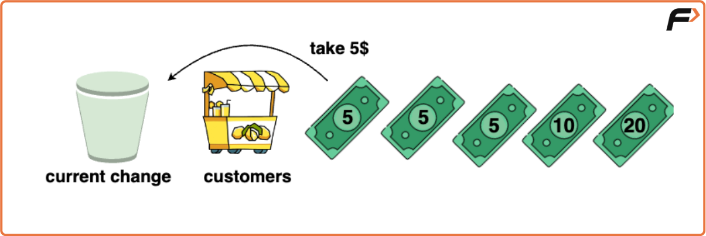
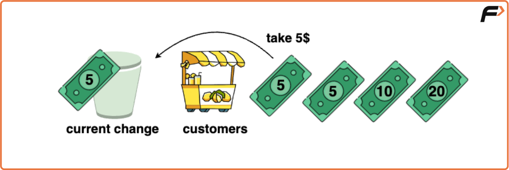
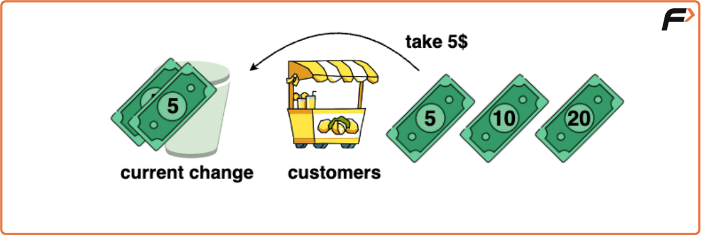
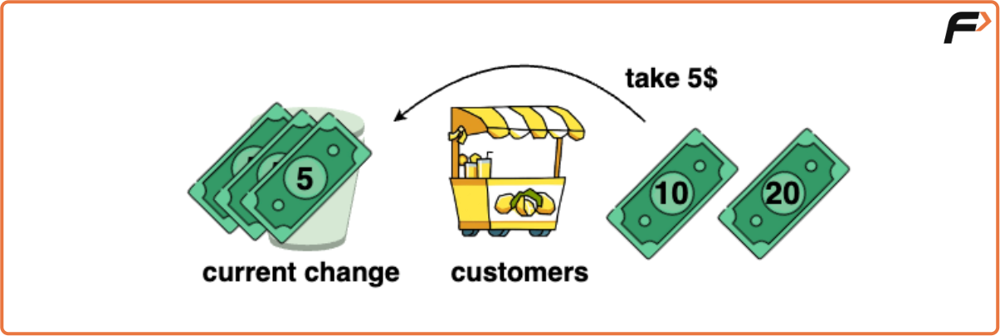
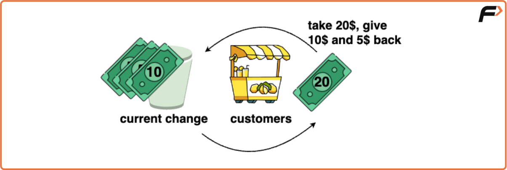
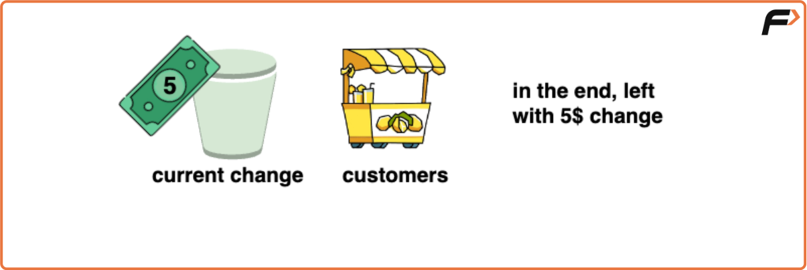

Lemonade Change
Problem Statement: Given an array representing a queue of customers and the value of bills they hold, determine if it is possible to provide correct change to each customer. Customers can only pay with 5$, 10$ or 20$ bills and we initially do not have any change at hand. Return true, if it is possible to provide correct change for each customer otherwise return false.
Examples
Example 1:
Input: bills = [5, 5, 5, 10, 20]
Output: True
Explanation:
Initially we have 0 change and the queue of customers is [5, 5, 5, 10, 20].
First Customer pays 5$, no change required.
Second Customer pays 5$, no change required.
Third Customer pays 5$, no change required.
The Fourth Customer pays 10$, out of the three 5$ bills we have, we pay a 5$ bill and accept the 10$ bill.
Fifth Customer pays 20$, out of the two 5$ bills and one 10$ bill we have, we pay 15$ in change and have one 5$ bill left.
Hence, it is possible to provide change to all customers.
Example 2:
Input: bills = [5, 5, 10, 10, 20]
Output: False
Explanation:
Initially, we have 0 change and the queue of customers is [5,5,10,10,20].
The first customer pays 5$, no change required.
The second customer pays 5$, no change required.
The third customer pays 10$, we collect a 5$ bill and give back a 5$ bill.
The fourth customer pays 10$, we collect a 5$ bill and give back a 5$ bill.
The fifth customer pays 20$, we cannot give the change of $15 back because we only have two $10 bills.
Since not every customer received the correct change, the answer is false.
Disclaimer: Here is the practice link to help you assess your knowledge better. It's highly recommend trying to solve it before looking at the solution.
Approach
Algorithm
- Initialise two counters, fives and tens to keep track of the number of 5$ and 10$ bills at hand. Initialise them to zero as we hold no change at the starting.
- Loop through each bill in the bills array and check the following: If the bill is 5$, increment the fives counter.
- If the bill is 10$, check if there are any 5$ bills available.
- If yes, provide change by incrementing the 10$ bill counter and decrementing the 5$ bill counter.
- If there are no 5$ bills available, return false as we cannot provide change.
- If the current bill is 20$, check if both 5$ and 10$ bills are available. If yes, provide change by decreasing the counter of 5$ and 10$ bills.
- If there are not enough 10$ bills available, check if there are at atleast three 5$ bills available. If yes, provide change by decreasing the 5$ counter by 3.
- If not able to provide change, return false.
- If all customers are served with the correct change, we exit out of the loop and return true.






Code
#include <vector>
#include <iostream>
using namespace std;
// Class that handles the Lemonade Change problem
class LemonadeStand {
public:
// Function to check if all customers can be given correct change
bool lemonadeChange(vector<int>& bills) {
int five = 0; // Counter for $5 bills
int ten = 0; // Counter for $10 bills
// Process each customer's bill
for (int bill : bills) {
if (bill == 5) {
// Customer pays with $5 -> no change needed
five++;
}
else if (bill == 10) {
// Customer pays with $10 -> needs $5 as change
if (five > 0) {
five--; // Give one $5 as change
ten++; // Accept the $10 bill
} else {
return false; // Cannot provide change
}
}
else { // bill == 20
// Customer pays with $20 -> needs $15 as change
if (five > 0 && ten > 0) {
five--; // Use one $5
ten--; // Use one $10
}
else if (five >= 3) {
five -= 3; // Use three $5 bills
}
else {
return false; // Cannot provide change
}
}
}
return true; // Successfully gave change to all customers
}
};
int main() {
vector<int> bills = {5, 5, 5, 10, 20};
cout << "Queue of customers: ";
for (int bill : bills) cout << bill << " ";
cout << endl;
LemonadeStand stand;
bool ans = stand.lemonadeChange(bills);
if (ans)
cout << "It is possible to provide change for all customers." << endl;
else
cout << "It is not possible to provide change for all customers." << endl;
return 0;
}
Complexity Analysis
Time Complexity: O(N) where N is the number of people in queue/ bills we will deal with. We iterate through each customer’s bills exactly once. The loop runs for N iterations and at each iteration the operations performed are constant time.
Space Complexity: O(1) as the algorithm uses only a constant amount of extra space regardless of the size of the input array. It does not require any additional data structures that scale with the input size.